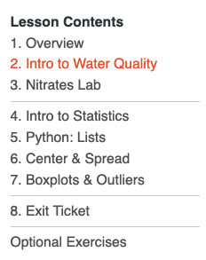
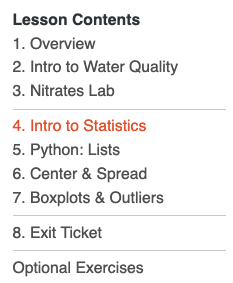
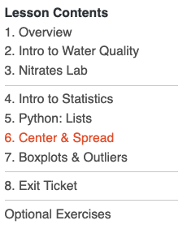

# This is a comment - Python ignores lines that start with #
# Let's make Python print a message!
print("Hello, Water Scientist!")Hello, Water Scientist!Water Quality and Summary Statistics
In this lesson, you will learn how to use the Python programming language to calculate summary statistics and investigate nitrates and nitrates in water samples.
Materials Needed:
- 💻 Your computer
- A web browser (Chrome, Firefox, or Safari)
- A calculator
In the workshops, we will use:
- slides
- interactive modules
- handouts
Please have the module pulled up on your device and handout ready.
💻 Navigate to: https://appalachianaicorps.org/ > Modules > Water Quality Monitoring > Lesson 1
Note: If you see a 💻 laptop 💻 icon in the slides, that means there is a corresponding activity in the module to complete!
The interactive modules contain checkpoints. The checkpoints are linked at the top of the page and include code blocks to run and questions to answer.
The checkpoints will also be highlighted in the body of the module. When you come across one, that means there is something new to complete there!
🎯 Checkpoint 1: Print Statements
In these workshops, we will learn Python together!
🎯 Checkpoint 1: Print Statements
Click the ▶️ Run Code button to run the block.
What happens?
🎯 Checkpoint 1: Print Statements
Click the ▶️ Run Code button to run the block.
# This is a comment - Python ignores lines that start with #
# Let's make Python print a message!
print("Hello, Water Scientist!")Hello, Water Scientist!🎉 You just ran Python code! See how it printed “Hello, Water Scientist!” below the block?
Note that strings are always surrounded by quotation marks.
🎯 Checkpoint 2: Mathematical Operators
Click the ▶️ Run Code button to run the blocks.
➕ Addition:
➖ Subtraction:
✖️ Multiplication:
➗ Division:
🎯 Checkpoint 2: Mathematical Operators
Click the ▶️ Run Code button to run the blocks.
➕ Addition:
➖ Subtraction:
✖️ Multiplication:
➗ Division:
🎯 Checkpoint 3: Comparing Values
Click the ▶️ Run Code button to run the block.
“The sum of 2 and 3 is greater than or equal to the product of 2 and 3.”
Is this statement TRUE or FALSE?
Read the statement and make a prediction. Is this statement TRUE or FALSE?
🎯 Checkpoint 4: Print Statements with Math
Click the ▶️ Run Code button to run the block.
Make a prediction. What will Python print?
🎯 Checkpoint 5: Your own print statements with math!
Click the ▶️ Run Code button to run the block.
Next Page 👉

🙋🏼🙋🏾♀️🙋🏽♂️ Question: What do you know about water?
In the next several workshops, we will become water quality citizen scientists!
The video discussed several indicators of water quality. We’ll focus on nitrogen today. It can serve as both a nutrient and a pollutant.
🎯 Checkpoint 1: Nitrogen in Our Water
🧠 What is the role of nitrogen in our water?
🧠 Do we want nitrates in our streams?
🧠 Our drinking water?
🧠 How about water with lots of nitrogen?
Nitrate and Nitrite EPA Limits
Nitrates: 10 mg/L
Nitrites: 1 mg/L
You can look up the reported nitrate concentration for water from your utility by using your zipcode.
🎯 Checkpoint 2: Nitrogen in Your Water
🧠 Using data from EWG, what is the most recently reported nitrate concentration by your water utility?


Next Page 👉

We are going to conduct a brief water quality lab to practice gathering data about nitrates and nitrates in water samples.
Materials Needed:
- 4+ water quality samples per group
- 4+ nitrate/nitrate test strips per group
- 1 lab notesheet per person
- 1 computer with the submission form open for data entry
- link to form (provided by your teacher)
- pencils
- 4+ sets of multicolor sticky notes (one set per water sample)
- 1 Sharpie markers
- timing device (watch, clock, etc.)
Assign roles to each person in your group:
Role 1: Data Recorder (Lab Report)
Role 2: Data Recorder (Computer)
Role 3: Data Recorder (Sticky Notes)
Role 4: Lab Technician
Read the procedure on your lab sheet. Make sure everyone in your group understands the procedure and has the materials needed for their role.
🚀 LET’S BEGIN 🚀
When finished: With the help of the Data Recorder (Lab Report), make sure everyone in your group has a copy of the data table on their own sheet.
Next Page 👉

We use measures of center to find the central value of a group of numbers. There are different types of central values. We’ll use mean and median in this lesson.
Sample Dataset: 1, 2, 6, 5, 1
The mean is often called the “average”. To find the mean, we add up all of the numbers of interest and divide by how many numbers there are.
\(\Large \frac{1 + 2 + 6 + 5 + 1}{5} = 3\)
The mean value of this sample dataset is 3.
We use measures of center to find the central value of a group of numbers. There are different types of central values. We’ll use mean and median in this lesson.
Sample Dataset: 1, 2, 6, 5, 1
The median is a different kind of measure of center. To calculate the median, you first line up all the values in your data set, then you find the middle value by position.
\(\large 1 + 1 + 2 + 5 + 6\)
Materials Needed:
- Lab sheet
- Calculator
🎯 Checkpoint 1: Calculating Mean & Median
Find the mean and median of your team’s lab data:
- Calculate mean nitrate concentration
- Calculate mean nitrite concentration
- Calculate median nitrate concentration
- Calculate median nitrite concentration
✏️ Record your results on your lab sheet.
Next Page 👉

Sample Dataset: 1, 2, 6, 5, 1
In Python, we store multiple numbers in something called a list.
# Our sample dataset from above
# (the square brackets [ ] make it a list)
sample_data = [1, 2, 6, 5, 1]
print("Our sample data:", sample_data)Our sample data: [1, 2, 6, 5, 1]Breaking it down:
- sample_data = the variable name we gave our list (you can name it anything!)
- = means “store this in the variable sample_data”
- [1, 2, 6, 5, 1] = the actual numbers, separated by commas
🎯 Checkpoint 1: Save your group nitrate and nitrite readings into lists!
Replace the ??, ??, ??, and ?? placeholders with the nitrate and nitrite readings from your group!
Click the ▶️ Run Code button to run the block.
# Create a list of your group's nitrate and nitrite readings!
# Change the 10, 20, 30, 40 to your group's real values
group_nitrate = [10, 20, 30, 40]
group_nitrite = [10, 20, 30, 40]
print("My group's nitrate readings:", group_nitrate)
print("My group's nitrite readings:", group_nitrite)My group's nitrate readings: [10, 20, 30, 40]
My group's nitrite readings: [10, 20, 30, 40]🎯 Checkpoint 2: Basic functions with lists.
How many items are in a list?
Smallest number in a list.
Biggest number in a list.
🎯 Checkpoint 3: Comparing nitrate readings to EPA limits.
Replace the ?? placeholder with the EPA limit for nitrate!
Click the ▶️ Run Code button to run the blocks.
# Let's check using your group's nitrate readings
max_nitrate = max(group_nitrate)
print("The water has a max nitrate concentration of", max_nitrate)
# Python can make decisions using 'if' statements!
if max_nitrate <= ??:
print("✓ Nitrate concentration is in the safe range!")
else:
print("✗ Nitrate concentration is outside the safe range!")🎯 Checkpoint 3: Comparing nitrate readings to EPA limits.
Replace the ?? placeholder with the EPA limit for nitrate!
Click the ▶️ Run Code button to run the blocks.
# Let's check using your group's nitrate readings
max_nitrate = max(group_nitrate)
print("The water has a max nitrate concentration of", max_nitrate)
# Python can make decisions using 'if' statements!
if max_nitrate <= 10:
print("✓ Nitrate concentration is in the safe range!")
else:
print("✗ Nitrate concentration is outside the safe range!")The water has a max nitrate concentration of 40
✗ Nitrate concentration is outside the safe range!Next Page 👉

🎯 Checkpoint 1: Calculate the mean of your group’s nitrate readings.
Replace the 10, 20, 30, and 40 placeholders with the nitrate readings from your group!
Click the ▶️ Run Code button to run the block.
# Recreate the list of your group's nitrate readings below
group_nitrate = [10, 20, 30, 40]
mean_nitrate = np.mean(group_nitrate)
print("Group nitrate readings (mg/L):", group_nitrate)
print("Group mean nitrate:", mean_nitrate, "mg/L")
# Is it safe? (Remember: the EPA's limit is less than 10 mg/L)
if mean_nitrate < 10:
print("✓ Average nitrate is SAFE")
else:
print("✗ Average nitrate is TOO HIGH")Group nitrate readings (mg/L): [10, 20, 30, 40]
Group mean nitrate: 25.0 mg/L
✗ Average nitrate is TOO HIGHYour teacher will provide the link to the CSV file for you to use.
🎯 Checkpoint 2: Import your whole class’s nitrate and nitrite data.
Replace the placeholder (Line 4) with CSV URL from your teacher. Be sure the keep the quotation marks! This will pull the class nitrate and nitrite data from the CSV file so you can use it later down the page.
Click the ▶️ Run Code button to run the block.
# Replace the url with the one provided from your teacher.
# Make sure to keep the quotation marks!
csv_url = "replace_this_with_your_csv_url"
class_nitrate, class_nitrite = load_class_data(csv_url)Nitrate values: [0.5, 1.0, 1.5, 2.0, 2.5, 3.0, 3.5, 4.0, 4.5, 5.0, 5.5, 6.0, 6.5, 7.0, 7.5, 8.0, 9.0, 10.0, 10.5, 11.0, 12.0, 13.5, 15.0, 18.0, 22.5]
Nitrite values: [0.0, 0.0, 0.1, 0.1, 0.15, 0.2, 0.2, 0.25, 0.3, 0.3, 0.35, 0.4, 0.4, 0.5, 0.5, 0.6, 0.7, 0.8, 0.9, 1.0, 1.2, 1.5, 1.8, 2.5, 3.0]🎯 Checkpoint 3: Calculate the mean of the class nitrate and nitrite data.
Replace the ??? placeholders (Lines 3 & 4) with the variables that hold the class nitrate and nitrite data. That is, class_nitrate and class_nitrite, respectively.
Click the ▶️ Run Code button to run the block.
🎯 Checkpoint 3: Calculate the class nitrate and nitrite means.
Replace the ??? placeholders (Lines 3 & 4) with the variables that hold the class nitrate and nitrite data. That is, class_nitrate and class_nitrite, respectively.
Click the ▶️ Run Code button to run the block.
# Calculate mean nitrate and nitrite for class data (replace the ???)
mean_class_nitrate = np.mean(class_nitrate)
mean_class_nitrite = np.mean(class_nitrite)
print("Class nitrate:", mean_class_nitrate, "mg/L")
print("Class nitrite:", mean_class_nitrite, "mg/L")Class nitrate: 7.58 mg/L
Class nitrite: 0.71 mg/LYour answers will differ. This is example data.
🎯 Checkpoint 4: Calculate the class nitrate and nitrite medians.
Similarly, replace ??? with the correct variable names to calculate the median for the class nitrate and nitrite data.
Click the ▶️ Run Code button to run the block.
🎯 Checkpoint 4: Calculate the class nitrate and nitrite medians.
Similarly, replace ??? with the correct variable names to calculate the median for the class nitrate and nitrite data.
Click the ▶️ Run Code button to run the block.
# Calculate median nitrate and nitrite for class data (replace the ???)
median_class_nitrate = np.median(class_nitrate)
median_class_nitrite = np.median(class_nitrite)
print("Class nitrate:", median_class_nitrate, "mg/L")
print("Class nitrite:", median_class_nitrite, "mg/L")Class nitrate: 6.5 mg/L
Class nitrite: 0.4 mg/LYour answers will differ. This is example data.
The range is a fairly simple calculation. It’s the maximum minus the minimum in a dataset.
max() - min()
🎯 Checkpoint 5: Calculate the range of your class’s nitrate and nitrite readings.
Replace ??? with the correct variable names to calculate the ranges of the data.
Click the ▶️ Run Code button to run the block.
🎯 Checkpoint 5: Calculate the range of your class’s nitrate and nitrite readings.
Replace ??? with the correct variable names to calculate the ranges of the data.
Click the ▶️ Run Code button to run the block.
class_nitrate_range = max(class_nitrate) - min(class_nitrate)
class_nitrite_range = max(class_nitrite) - min(class_nitrite)
print("Range of class nitrate data:", class_nitrate_range)
print("Range of class nitrite data:", class_nitrite_range)Range of class nitrate data: 22.0
Range of class nitrite data: 3.0Your answers will differ. This is example data.
🎯 Checkpoint 6: Calculate the standard deviations of theclass nitrate and nitrite data.
🎯 Checkpoint 6: Find the standard deviation of the class nitrate and nitrite data.
Replace ??? with the correct variable names to calculate the standard deviations of the data.
Click the ▶️ Run Code button to run the block.
🎯 Checkpoint 6: Find the standard deviation of the class nitrate and nitrite data.
Replace ??? with the correct variable names to calculate the standard deviations of the data.
Click the ▶️ Run Code button to run the block.
class_nitrate_stdev = np.std(class_nitrate)
class_nitrite_stdev = np.std(class_nitrite)
print("Standard deviation of class nitrate data:", class_nitrate_stdev)
print("Standard deviation of class nitrite data:", class_nitrite_stdev)Standard deviation of class nitrate data: 5.40865972307373
Standard deviation of class nitrite data: 0.7532595834106592Your answers will differ. This is example data.
If a creek’s reading has high standard deviation (lots of variability in comparison to other creeks), it might mean:
Next Page 👉

🎯 Checkpoint 1: Once more, import your whole class’s nitrate and nitrite data.
Once more, replace the placeholder (Line 4) with CSV URL from your teacher. Be sure the keep the quotation marks! This will pull the class nitrate and nitrite data from the CSV file so you can use it later down the page.
Click the ▶️ Run Code button to run the block.
# Replace the url with the one provided from your teacher.
# Make sure to keep the quotation marks!
csv_url = "replace_this_with_your_csv_url"
class_nitrate, class_nitrite = load_class_data(csv_url)Nitrate values: [0.5, 1.0, 1.5, 2.0, 2.5, 3.0, 3.5, 4.0, 4.5, 5.0, 5.5, 6.0, 6.5, 7.0, 7.5, 8.0, 9.0, 10.0, 10.5, 11.0, 12.0, 13.5, 15.0, 18.0, 22.5]
Nitrite values: [0.0, 0.0, 0.1, 0.1, 0.15, 0.2, 0.2, 0.25, 0.3, 0.3, 0.35, 0.4, 0.4, 0.5, 0.5, 0.6, 0.7, 0.8, 0.9, 1.0, 1.2, 1.5, 1.8, 2.5, 3.0]Data Recorders (Sticky Notes), sort all of your sticky notes by color. Pass them out to each group, matching the sticky’s color to the group’s tent color. This will result in each group having a full set of stickies representing the class nitrate data.
🎯 Checkpoint 2: As a group, construct a boxplot for the class nitrate data by hand.
Materials Needed:
- 1 Post-It grid paper sheet per group
- 1 poster marker per group
- Your group’s full set of stickies (including those from other groups) from the nitrate lab
- Lab sheet handout (back)
Follow the steps on the back of your lab sheet to create a boxplot for the class nitrate data.
🚀 LET’S GO 🚀
Whew! That was a lot of work. Wouldn’t it be great if Python could do it for us? Good news. It can!
🎯 Checkpoint 3: Create a boxplot for the class nitrate data.
Click the ▶️ Run Code button to run the block and create a boxplot for the class nitrate data.
import matplotlib.pyplot as plt
plt.figure(figsize=(8, 6))
plt.boxplot(class_nitrate, vert=True, patch_artist=True,
boxprops=dict(facecolor='plum'))
plt.ylabel('Nitrate (mg/L)', fontsize=12)
plt.xticks([])
plt.title('Boxplot of Class Nitrate', fontsize=13)
plt.grid(True, alpha=0.3, axis='y')
plt.show()Whew! That was a lot of work. Wouldn’t it be great if Python could do it for us? Good news. It can!
🎯 Checkpoint 3: Create a boxplot for the class nitrate data.
Click the ▶️ Run Code button to run the block and create a boxplot for the class nitrate data.
import matplotlib.pyplot as plt
plt.figure(figsize=(8, 6))
plt.boxplot(class_nitrate, vert=True, patch_artist=True,
boxprops=dict(facecolor='plum'))
plt.ylabel('Nitrate (mg/L)', fontsize=12)
plt.xticks([])
plt.title('Boxplot of Class Nitrate', fontsize=13)
plt.grid(True, alpha=0.3, axis='y')
plt.show()
Now, let’s create a boxplot for the class nitrite data.
🎯 Checkpoint 4: Create a boxplot for the class nitrite data.
Click the ▶️ Run Code button to run the block and create a boxplot for the class nitrite data.
Now, let’s create a boxplot for the class nitrite data.
🎯 Checkpoint 4: Create a boxplot for the class nitrite data.
Click the ▶️ Run Code button to run the block and create a boxplot for the class nitrite data.
Outliers are data points that are very different from the rest of your data. - Can really change your statistics—like mean and standard deviation. - On boxplots, outliers are represented by a circle (or sometimes a star) beyond the whiskers.
🧠 Do either the class nitrate or nitrite boxplot have outliers? How do you know?
Outliers can happen for different reasons:
Your job as a scientist: Figure out which reason it is!
AAIC — Water Quality